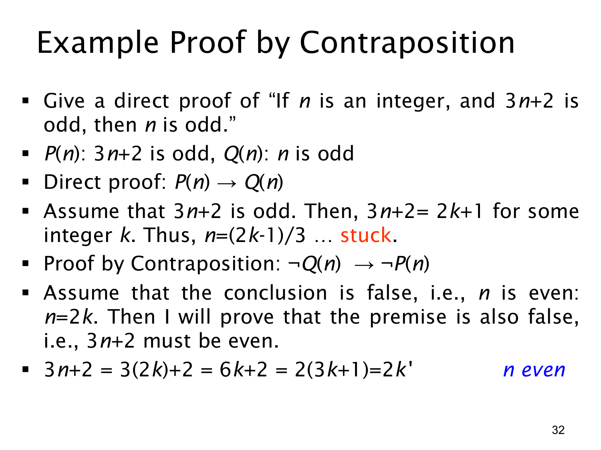

L1.3 · 第 32 页讲解原文
查看这一页课件

逆否证明实例：3n+2 为奇数时 n 为奇数
本页要证明：对整数 n，若 3n+2 是奇数，则 n 是奇数。记 P(n) 为“3n+2 为奇数”，Q(n) 为“n 为奇数”，原命题是 P(n)→Q(n)。
课件先尝试直接证明：假设 3n+2=2k+1，其中 k 是整数，移项得到 n=(2k−1)/3。这个表达式没有立即呈现 n=2j+1 且 j 为整数的形式，因此这一条推导路线在课件中标作“卡住”。这不表示命题无法直接证明，只表示此处没有找到顺畅的下一步。
转而证明逆否命题 ¬Q(n)→¬P(n)，即“若 n 不是奇数，则 3n+2 不是奇数”。对整数来说，这等价于“若 n 为偶数，则 3n+2 为偶数”。假设 n=2k，其中 k∈Z，那么
3n+2=3(2k)+2=6k+2=2(3k+1).
3k+1 是整数，因此 3n+2 符合偶数的定义。逆否命题成立，故与它等价的原命题成立。
本页标题是“逆否证明实例”，虽然第一条文字写着“给出直接证明”，课件正文实际是先展示直接尝试的困难，再完成逆否证明。证明结尾也应说清 k′=3k+1∈Z，这样 3n+2=2k′ 才严格证明它为偶数。